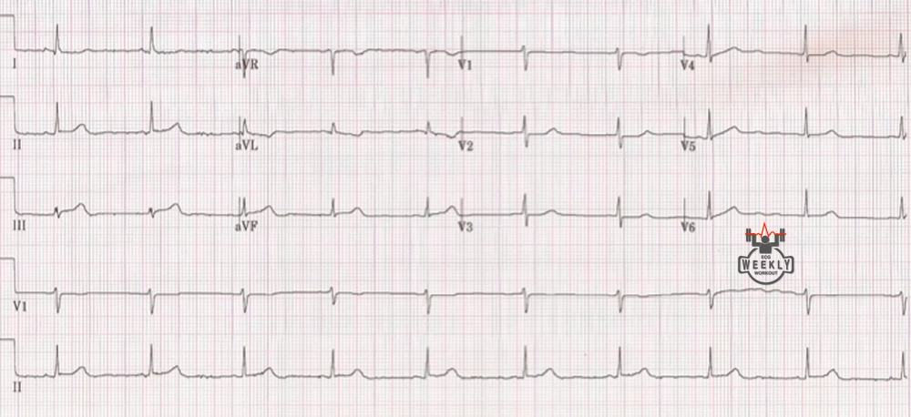
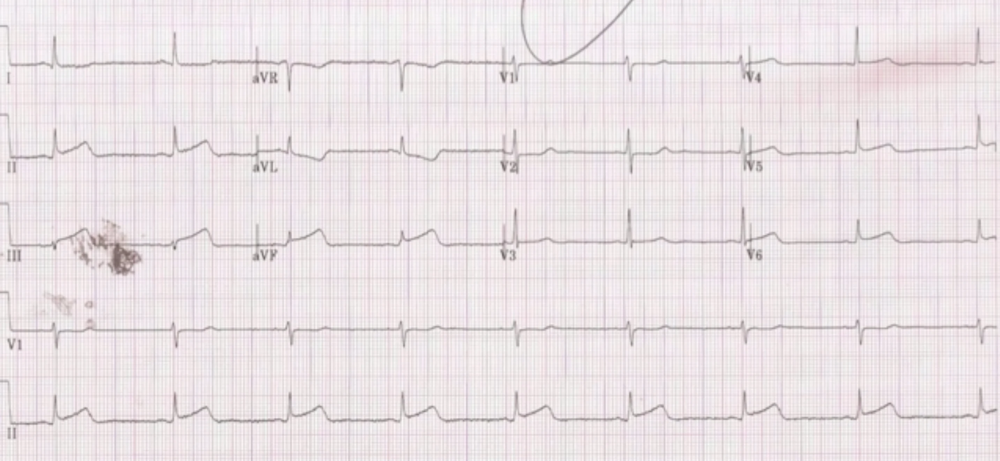

KATEGORIE 1: No-Brainer
In der ersten Kategorie finden sich EKG-Auffälligkeiten, die ohne gezielte Suche schon bei der ersten Analyse auffallen sollten.
Fall 1
Eine 56-jährige Patientin wird mit Brustschmerzen in das University Medical Center New Orleans eingeliefert. Während des Transports ist sie einmalig synkopiert. Bekannt sind eine arterielle Hypertonie und eine Hyperlipidämie, sie ist Raucherin und die Familienanamnese ist positiv für kardiale Erkrankungen.
EKG

Die Notaufnahme wollte das Herzkatheterlabor aktivieren, die Kardiologen lehnten jedoch ab, da das EKG nicht diagnostisch sei. Da das initiale Troponin negativ, die Ableitung aVL aber auffällig war, wurden engmaschig Wiederholungs-EKGs geschrieben.
EKG 2h später

Myokardinfarkt
Die häufigste Ursache eines Myokardinfarktes ist eine atherosklerotische Plaqueruptur mit nachfolgender Thrombosierung, die zu einem Verschluss einer Koronararterie führt.
Die Plaqueruptur ist die häufigste Ursache, allerdings gibt es noch weitere: koronare Thromboembolie, Koronarspasmen, Plaqueerosion, SCAD,
Takotsubo-Kardiomyopathie etc.; betrifft vor allem junge Patienten! Akut ischämisches und später vernarbtes Myokard begünstigen die Entstehung von Rhythmusstörungen.
Die STEMI-/OMI-Kriterien sind mittlerweile sehr umfangreich und mit wachsender Studienlage kommen laufend neue hinzu. Daher folgt hier nur ein kurzer Überblick über relevante EKG-Merkmale:
- Klassische STEMI-Kriterien
≥1mm Hebung (Abstand zwischen J-Punkt und TP-Segment) in zwei räumlich benachbarten
Ableitungen.
CAVE: 1,5mm-2,5mm in V2/V3 je nach Alter und Geschlecht! - Posteriorer OMI Häufig übersehenes STEMI-Äquivalent, da die ST-Hebungen nur in den posterioren Ableitungen (V7-V9) sichtbar sind. Daher muss man auf reziproke Veränderungen in den anterioren Ableitungen achten: ST-Senkungen in V1-V4 (kann auch minimal sein), sowie hohe R-Zacken und T-Wellen; sind die anterioren Ableitungen in der Hinsicht auffällig, sollten zusätzlich V7-V9 abgeleitet werden!
- de-Winter-T-Wellen Aufsteigende ST-Senkung in den anterioren Ableitungen, die in eine hohe symmetrische T-Welle übergeht.
- Sgarbossa-Kriterien 3 Kriterien mit denen sich ein Infarkt trotz Linksschenkelblock oder Schrittmacherrhythmus feststellen lässt. Bewertet werden konkordante und übermäßig diskonkordante ST-Veränderungen.
- Shark-Fin-Zeichen
Massiver STEMI: Ende vom QRS-Komplex, ST-Segment und T-Welle fusionieren zu einem
Dreieck.
CAVE: Dieses Zeichen geht mit einer sehr hohen Gefahr eines elektrischen oder hämodynamischen Kollapses einher: Reanimationsbereitschaft herstellen! - Wellens-Syndrom
Biphasische oder tiefe, negative, symmetrische T-Wellen, meistens in V2/V3. Dieses
Zeichen signalisiert die Reperfusion einer zuvor okkludierten Koronararterie (meist proximale LAD).
CAVE: Das Wellens-Syndrom zeigt sich typischerweise im schmerzfreien Intervall; Nicht beirren lassen: Die Arterie kann jederzeit erneut verschließen! - Hyperakute T-Wellen Oft die erste Manifestation eines Infarkts: breite, symmetrische T-Wellen, die im Vergleich zum QRS-Komplex auffallend groß sind. Passt der gesamte QRS-Komplex in die T-Welle hinein, so spricht man von einer hyperakuten T-Welle.
- Reziproke VeränderungenWie im oben beschriebenen Fall ist eine Veränderung in aVL oft das erste Warnsignal für einen bevorstehenden inferioren STEMI (II, III, aVF)
- Aslanger-Zeichen
Isolierte ST-Hebung in III, ST-Segment in V1 höher als in V2 sowie ST-Senkung mit terminal
positiver T-Welle in V4-V6. Dieses Zeichen spricht für einen akuten inferioren Infarkt.
CAVE: Dieses Muster ist noch nicht leitlinienetabliert, weshalb eine PCI-Anmeldung abgelehnt werden kann. - Südafrikanisches Flaggen-Zeichen Dabei handelt es sich um eine Merkhilfe: I und aVL sind benachbarte Ableitungen, demnach sind ST-Hebungen in diesen beiden Ableitungen ein hochlateraler STEMI! Durch eine zusätzliche reziproke Senkung in aVF und einer ST-Hebung in V2, ähnelt diese Konstellation der südafrikanischen Flagge (je nach Anordnung der Ableitungen auf dem EKG-Papier).
- und vieles mehr ...